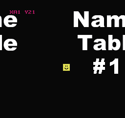
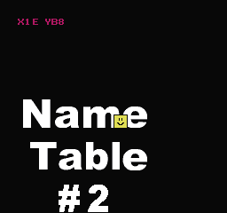
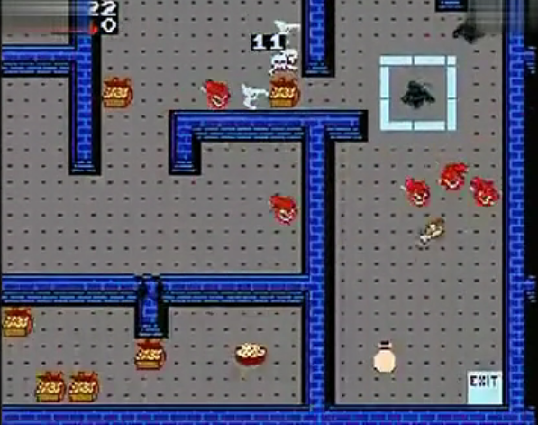

09、滚动
滚动的意思是背景滚动，精灵不受影响。
NES PPU有一个滚动寄存器，$2005。
这个地址写入2次，第一次是X滚动，第二次是Y滚动。这是在v-blank期间需要发生的另一件事，由neslib自动处理。neslib有这个函数scroll(x,y)，你需要给他传递XY的值。X屏幕左移，Y屏幕上移。
我不喜欢Y的滚动方式，Y的滚动方式很奇怪，0-$EF是实际的位置，$F0-$FF是负值，这不是我们想要的。如果Y>$EF,neslib会减去$F0
(and assumes that you are going to manage the maximum at $1df.这个我不会翻译了。。。后面是机器翻译的) 并假设您将以$ 1df管理最大值
我用了和其他人不同的方式处理滚动。
set_scroll_x(x) 和 set_scroll_y(y)
y可以使用任何int值，高字节可以告诉你你在那个nametable中，even表示顶部，odd表示底部。
你有2个图，even=用第一个，odd使用第二个。
（这部分翻译有点奇怪，回来再看、目前感觉even和odd应该是偶数和奇数的意思）
我们的代码仍然需要调整Y中的每个更改以跳过字节的$ f0-ff区域，因为我们的屏幕只有240像素高。我写了一些函数来为我们做这件事。
add_scroll_y(add, old y) y加上add的值以后的值.
sub_scroll_y(add, old y) y减去add的值以后的值.
我们把上面的返回值传给 set_scroll_y(y) 来让地图滚动。
在测试上面的功能之前，我们先说一下镜像
scroll_y 的初始值是 0xef, 加上5以后，新值 scroll_y = 0x104
scroll_y = add_scroll_y(5, scroll_y);
scroll_y 的初始值是 0xef, 加上 0x15 以后，新值 scroll_y = 0x114
scroll_y = add_scroll_y(0x15, scroll_y);
减法
scroll_y 的初始值是 0x104, 减去 5 以后，新值 scroll_y = 0xef
scroll_y = sub_scroll_y(5, scroll_y);
跳过 0xf0 - 0xff 这个区间内的无效数值。
水平滚动（垂直镜像）
最前面的介绍页里我就提到过，NES的VRAM仅够2个nametables使用，如果将其设置为Vertical mirroring（垂直镜像），就需要在crt0.s中的ines标头中设置镜像类型，这实际上是.cfg文件中的链接符号“NES_MIRRORING”。真正的卡带中会有一个焊点永久的将卡带设置成水平或垂直镜像模式。
垂直镜像的nametables就是下面的样子
0 1
0 1
nametables的2和3其实就是0和1的复制（镜像，内存值是一样的）
这样使用横线滚动就很有用了。如果不改变Y值，就可以向右滚动了，我们可以在用户看不到的屏幕外区域做修改。下面是垂直镜像的代码和截图，你可以通过方向键自由滚动，并看到下面的2个nametables是上面的镜像。
屏幕上的数字是精灵。

https://github.com/nesdoug/10_Scroll_H/blob/master/scroll_h.c
https://github.com/nesdoug/10_Scroll_H
垂直滚动（水平镜像）
跟垂直镜像差不多的，除了右边2个nametables是左边的复制（镜像）
0 0
2 2
垂直滚动，X不改变，可以做向上或向下滚动，屏幕外的用户不可见区域可以修改

https://github.com/nesdoug/11_Scroll_V/blob/master/scroll_v.c
https://github.com/nesdoug/11_Scroll_V
还有一种4屏模式，但几乎很少有游戏使用，他需要一个特殊的mapper映射器，也就是卡带里有额外的RAM芯片
例如：铁手套(Gauntlet) 和 Rad Racer II
这个是我从搜狐视频里找来的截图

https://tv.sohu.com/v/dXMvNjMzMDk3MjMvMjk3MzkyMzkuc2h0bWw=.html